단일 행 텍스트
TEXT · 한 줄짜리 자유 입력란
단일 행 텍스트란
- 1.1필드 추가와 속성 패널 구성
1.1필드 추가와 속성 패널 구성
개요
단일 행 텍스트(TEXT) 는 한 줄짜리 자유 입력란입니다. 피험자 이니셜 · 검체 번호 · 짧은 메모처럼 줄바꿈이 필요 없는 짧은 문자열을 입력받을 때 사용합니다. 여러 줄이 필요하면 다중 행 텍스트를, 숫자 계산 · 범위 비교가 필요하면 숫자 타입을 사용합니다.
화면 설명
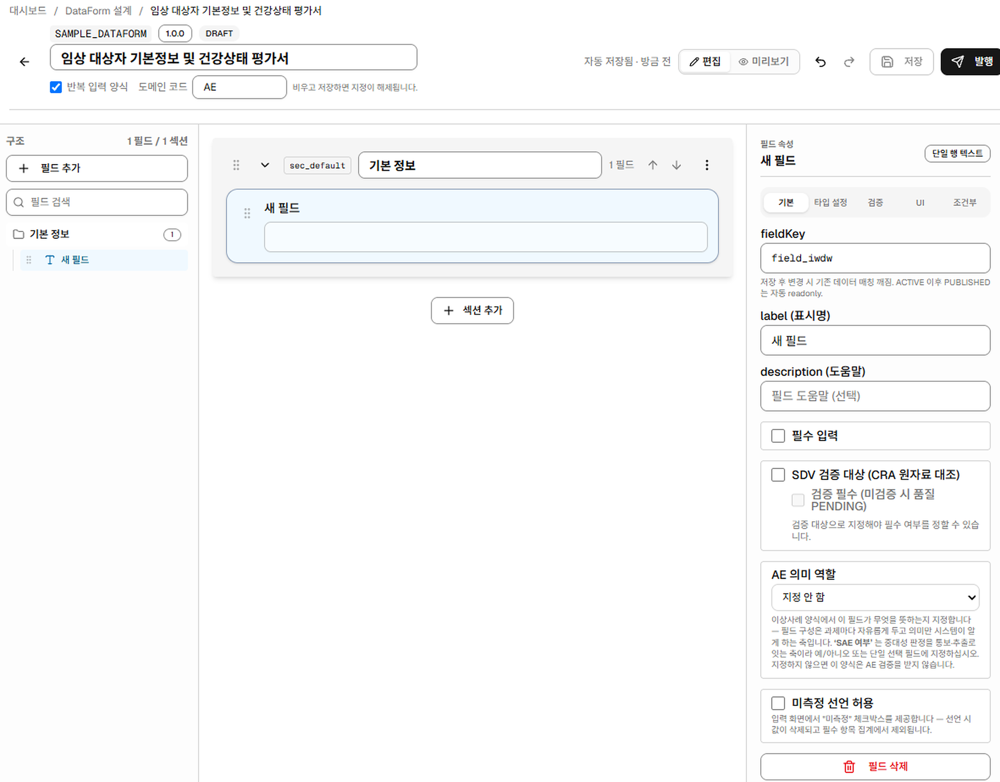
[+ 필드 추가] — 여기에서 타입을 지정하면 필드가 생성됩니다.
구조 트리에 새 필드가 추가됩니다. (아이콘 T)
WYSIWYG 캔버스에 입력란이 표시됩니다. 캔버스는 입력 화면 미리보기이므로 설정을 변경하면 즉시 반영됩니다.
fieldKey — 값이 저장되는 실제 키입니다. 2.1
label (표시명) · description (도움말) — 화면에 표시되는 이름과 보조 설명입니다. 2.1
필수 입력 · SDV 검증 대상 · AE 의미 역할 · 미측정 선언 허용 — 2장에서 하나씩 설명합니다.
타입 배지 — 선택한 필드의 타입입니다. 추가한 뒤에는 변경할 수 없습니다.
속성 탭 5종 — 기본 · 타입 설정 · 검증 · UI · 조건부. 이 매뉴얼 2~6장이 각 탭에 대응합니다.
유의사항
필수 확인 데이터 손상 · 폼 완료 불가
- • 타입은 추가한 뒤에 변경할 수 없습니다. 잘못 선택했다면 필드를 삭제하고 다시 추가하십시오. (테이블형 · 필드 그룹의 하위 항목만 예외로 타입 변경이 가능합니다.)
- • 발행(PUBLISH) 이후에는 구조를 변경할 수 없습니다. 운영 중 수정이 필요하면 새 버전을 발행하십시오.
오해하기 쉬운 동작
- • 설정을 변경하면 상단에 “변경 감지됨 — 자동 저장 대기” 가 표시됩니다. 잠시 뒤 자동 저장되며, [저장] 을 선택해 즉시 저장할 수도 있습니다. 되돌리기는
Ctrl+Z입니다.
기본 탭 — 이름 · 필수 · 검증 대상 · 미측정
- 2.1fieldKey · 표시명 · 도움말
- 2.2필수 입력
- 2.3SDV 검증 대상 (CRA 원자료 대조)
- 2.4미측정 선언 허용
2.1fieldKey · 표시명 · 도움말
개요
필드의 이름을 정하는 영역입니다. 저장 키(fieldKey)와 화면에 표시되는 이름(label)은 서로 다른 값이며, 변경해도 되는 시점이 다릅니다.
화면 설명
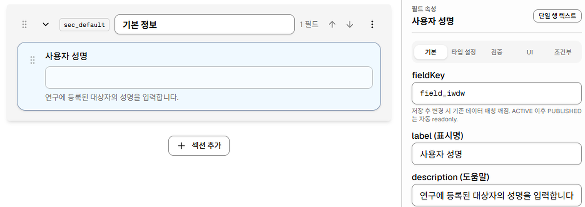
label (표시명) — 입력 화면에 표시할 항목 이름을 입력합니다.
캔버스 필드 제목으로 표시됩니다.
description (도움말) — 표시명 아래에 표시할 보조 설명을 입력합니다. 공란으로 두면 표시되지 않습니다.
입력란 아래 회색 글씨로 표시됩니다.
fieldKey — 값이 저장되는 실제 키입니다. 필드를 추가하면 field_iwdw 처럼 자동으로 부여되며 영문 · 숫자 · 밑줄로 변경할 수 있습니다. 화면에는 표시되지 않습니다 — 아래 유의사항을 반드시 확인하십시오.
유의사항
필수 확인 데이터 손상 · 폼 완료 불가
- • ⛔ 저장한 뒤에는 fieldKey 를 변경하지 마십시오. 화면 안내와 같이 “저장 후 변경 시 기존 데이터 매칭 깨짐” — 이미 입력된 값이 새 키와 연결되지 않아 사실상 유실됩니다.
- • 폼이 ACTIVE 이후 PUBLISHED 상태가 되면 fieldKey 입력란은 자동으로 읽기 전용이 됩니다. 시스템이 변경을 막아 주는 것은 그 이후이므로, 그전까지는 사용자가 직접 주의해야 합니다.
오해하기 쉬운 동작
- • 표시명은 언제든 변경해도 안전합니다. 저장 키가 아니라 화면 문구이기 때문입니다.
참고
- • 도움말(
description)과 UI 탭의helpText는 서로 다른 항목입니다. 차이는 5.4 에서 설명합니다.
2.2필수 입력
개요
이 항목을 반드시 입력해야 하는지 정합니다. 선택하면 입력 화면에서 값이 비어 있을 때 저장이 차단됩니다.
화면 설명
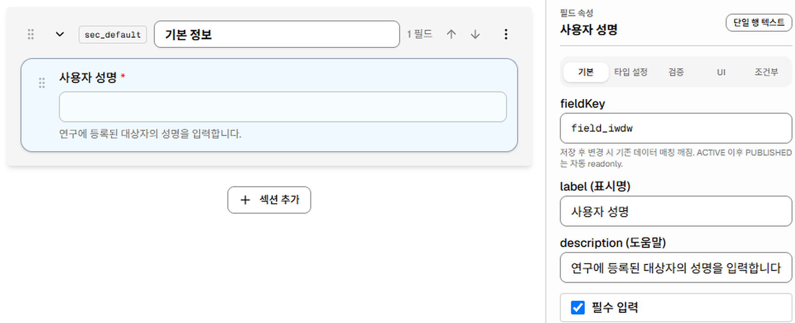
필수 입력 — 선택하면 이 필드가 필수가 됩니다.
캔버스 표시명 오른쪽에 빨간 별표(*) 가 표시되어 사용자에게 필수임을 알립니다.
유의사항
필수 확인 데이터 손상 · 폼 완료 불가
- • 조건부 표시로 숨겨진 필드는 필수 검증이 면제됩니다. 6장 표시되지 않는 항목을 필수로 요구하면 폼을 완료할 수 없기 때문입니다.
- • UI 탭의 숨김은 필수 집계에서 제외되지 않습니다. 조건부 표시와 혼동하지 마십시오. 5.3
오해하기 쉬운 동작
- • 미측정 선언을 허용한 경우, 사용자가 “미측정” 을 선언하면 그 필드는 필수 집계에서 제외됩니다. 2.4
참고
- • 필수 여부는 폼 완료 판정에 사용됩니다. 필수 항목이 비어 있으면 해당 폼은 완료로 집계되지 않습니다.
2.3SDV 검증 대상 (CRA 원자료 대조)
개요
SDV(Source Data Verification) 는 임상연구모니터요원(CRA)이 입력값을 의료기관 원자료와 대조하는 절차입니다. 이 필드를 그 대상으로 지정할지 여기에서 정합니다.
화면 설명


SDV 검증 대상 (CRA 원자료 대조) — 선택하면 이 필드가 CRA 의 대조 목록에 포함됩니다.
선택 상태로 바뀌면서 하위 항목이 활성화됩니다.
검증 필수 (미검증 시 품질 PENDING) — ①을 선택한 뒤에야 지정할 수 있습니다. 선택하면 CRA 가 대조를 마치기 전까지 해당 데이터의 품질 상태가 PENDING 에 머무릅니다.
①을 선택하기 전에는 ②가 흐리게 비활성입니다. 화면 안내와 같이 “검증 대상으로 지정해야 필수 여부를 정할 수 있습니다.”
유의사항
필수 확인 데이터 손상 · 폼 완료 불가
- • 값이 변경되면 검증이 해제됩니다. 이미 VERIFIED 인 필드의 값을 수정하면 품질 상태가 PENDING 으로 되돌아가고 CRA 가 다시 대조해야 합니다.
오해하기 쉬운 동작
- • SDV 는 입력한 사람이 직접 수행할 수 없습니다. 시스템이 교차 검증(Cross-User SoD)을 강제하므로 입력자와 검증자는 반드시 달라야 합니다.
참고
- • 품질 상태는 PENDING → VERIFIED → CLEAN 순으로 진행됩니다. 검증 필수로 지정한 필드가 하나라도 미검증이면 해당 데이터는 CLEAN 이 되지 못합니다.
- • 모든 필드를 SDV 대상으로 지정하면 모니터링 부담이 급격히 증가합니다. 1차 평가변수 · 안전성 항목 위주로 지정하십시오.
2.4미측정 선언 허용
개요
검사를 수행하지 못한 경우를 값으로 구분해 기록하는 기능입니다. 공란으로 두면 “아직 입력하지 않음” 과 “측정하지 않음” 을 구별할 수 없습니다. 이 선언이 그 둘을 구분해 줍니다.
화면 설명

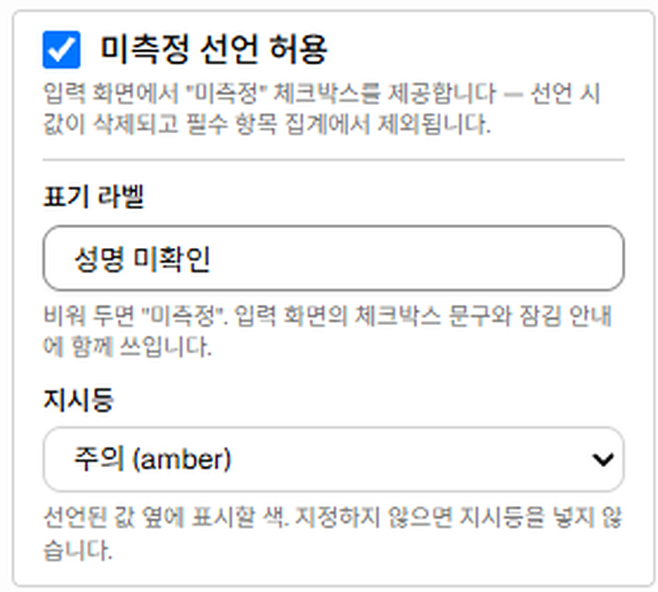
미측정 선언 허용 — 선택하면 입력 화면에 “미측정” 체크박스가 생성되고, 아래 두 항목이 표시됩니다.
표기 라벨 — 공란으로 두면 기본값 “미측정” 이 적용됩니다.
성명 미확인 으로 변경하면 이 문구가 입력 화면 체크박스와 잠김 안내에 함께 적용됩니다.
지시등 — 기본값은 없음 입니다.
주의(amber) 로 변경하면 선언된 값 옆에 해당 색 표시가 나타납니다.
유의사항
필수 확인 데이터 손상 · 폼 완료 불가
- • 선언하면 값이 삭제됩니다. 화면 안내와 같이 — “선언 시 값이 삭제되고 필수 항목 집계에서 제외됩니다.” 입력해 둔 내용이 있으면 삭제되므로 사용자에게 미리 안내하십시오.
오해하기 쉬운 동작
- • 선언된 필드는 필수 집계에서 제외됩니다. 따라서 필수 항목이어도 폼을 완료할 수 있습니다.
참고
- • 지시등을 지정하지 않으면 색 표시가 적용되지 않습니다. 강조가 필요하면 주의(amber) 등을 선택하십시오.
- • 검사 미실시가 자주 발생하는 항목(결측이 임상적으로 의미 있는 항목)에 사용하는 기능입니다. 모든 필드에 적용할 필요는 없습니다.
타입 설정 탭 — 입력 형식
- 3.1타입 설정 탭 전체 구성
- 3.2최소 · 최대 길이
- 3.3정규식 (pattern)
- 3.4접두사 · 접미사 (prefix · postfix)
- 3.5기본값 (defaultValue)
3.1전체 구성
개요
입력 형식을 정하는 탭입니다. 여기에서 지정한 값은 저장할 때 시스템이 다시 검사하므로, 화면에서만 안내하는 문구가 아니라 실제 차단 조건입니다.
화면 설명
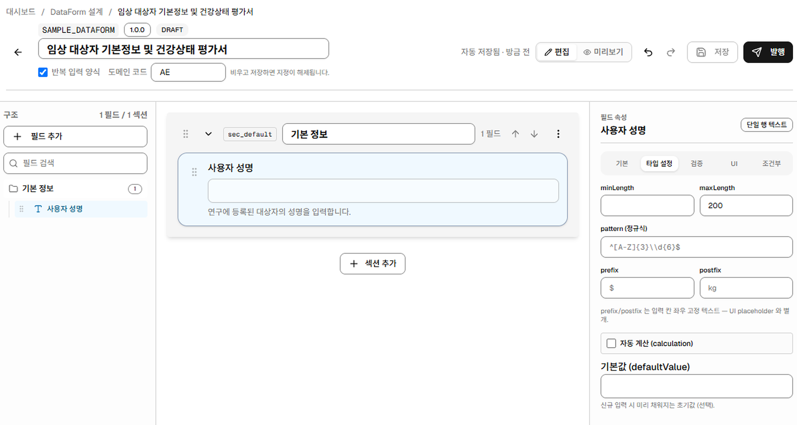
minLength · maxLength — 문자 수의 하한과 상한입니다. 3.2
pattern (정규식) — 값이 따라야 할 형식입니다. 3.3
prefix · postfix — 입력란 좌우에 고정으로 표시되는 문구입니다. 3.4
화면 안내 — “prefix/postfix 는 입력 칸 좌우 고정 텍스트 — UI placeholder 와 별개.”
기본값 (defaultValue) — 신규 입력 시 미리 입력해 두는 값입니다. 3.5
유의사항
필수 확인 데이터 손상 · 폼 완료 불가
- • 반대로 진한 글씨로 보이는 값(캡처의 maxLength
200)은 이미 설정된 값입니다. 불필요하면 값을 지워야 제한이 해제됩니다.
오해하기 쉬운 동작
- • 입력란에 흐린 글씨로 보이는
^[A-Z]{3}\d{6}$·$·kg는 입력 예시(placeholder) 이며 설정된 값이 아닙니다. 공란이면 해당 제한은 적용되지 않습니다.
참고
- • 모든 항목은 선택입니다. 아무것도 설정하지 않으면 길이 · 형식 제한이 없는 자유 입력란이 됩니다.
- • 이 탭의 구성은 필드를 생성할 때 선택한 타입으로 고정됩니다. 타입이 다르면 이 탭의 항목도 달라집니다.
3.2최소 · 최대 길이
개요
입력 가능한 문자 수의 범위를 정합니다. 두 항목은 서로 독립적이므로 한쪽만 입력해도 동작합니다.
화면 설명
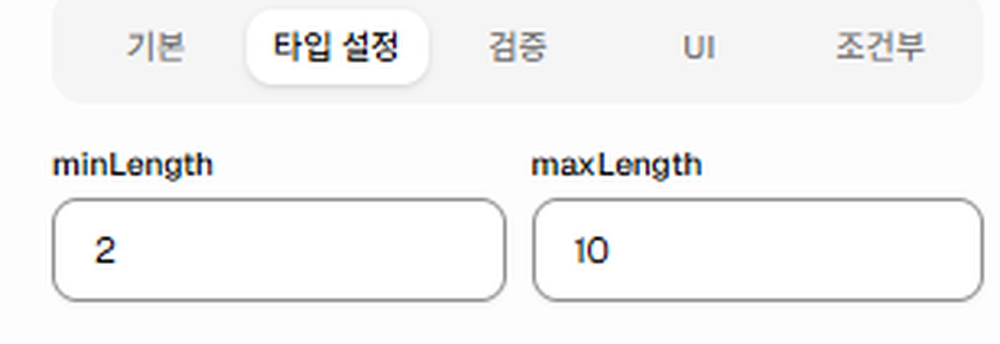
minLength — 최소 문자 수입니다. 예시의 2 는 “두 글자 이상” 을 의미합니다.
maxLength — 최대 문자 수입니다. 예시의 10 은 “열 글자 이하” 를 의미합니다.
유의사항
필수 확인 데이터 손상 · 폼 완료 불가
- • 길이 제한은 캔버스 모양을 변경하지 않습니다. 화면으로는 확인할 수 없고, 값이 범위를 벗어났을 때 저장 단계에서 차단됩니다.
- • 이미 운영 중인 폼에서 제한을 좁히면 기존 데이터가 새 제한을 위반한 상태로 남을 수 있습니다. 해당 값은 다시 저장할 때 차단되므로 발행 후 축소는 신중히 결정하십시오.
오해하기 쉬운 동작
- • 한쪽만 설정해도 됩니다 — 상한만 적용하려면 maxLength 만 입력하십시오.
참고
- • 길이는 공백을 포함해 계산합니다. 앞뒤 공백도 한 글자입니다.
- • “반드시 N글자” 로 고정하려면 두 항목에 같은 수를 입력하거나 정규식을 사용하십시오. 3.3
3.3정규식 (pattern)
개요
값이 따라야 할 형식을 정규식으로 지정합니다. 길이 제한만으로는 표현할 수 없는 규칙(한글만 · 영문 이니셜 · 검체 번호 체계 등)을 적용할 때 사용합니다.
화면 설명
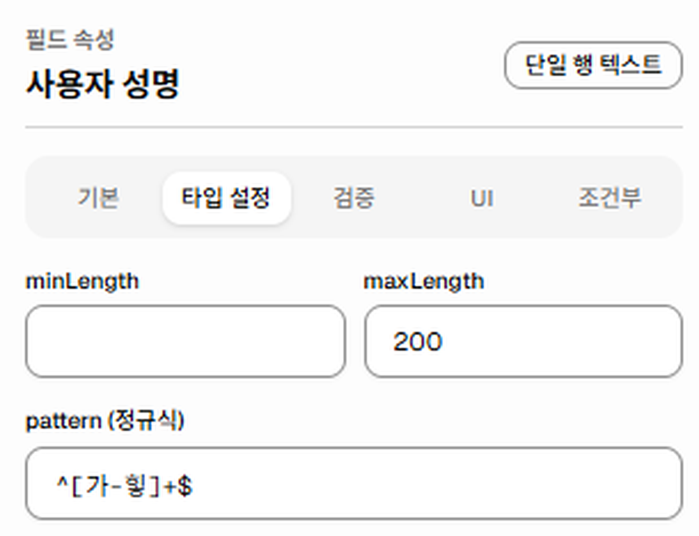
^[가-힣]+$ 를 입력해 한글만 허용한 상태 (속성 패널)pattern (정규식) — 예시의 ^[가-힣]+$ 는 “한글만, 1자 이상” 을 의미합니다. 성명 입력란에 영문 · 숫자가 섞여 들어오는 것을 막습니다. 이 형식을 벗어난 값은 저장되지 않습니다.
유의사항
필수 확인 데이터 손상 · 폼 완료 불가
- • 형식이 맞지 않으면 사용자는 저장 단계에서야 차단됩니다. 어떤 형식인지 placeholder 나 helpText 로 미리 안내하십시오. 5.4
오해하기 쉬운 동작
- •
^는 시작,$는 끝을 의미합니다. 둘을 생략하면 값의 일부만 일치해도 통과하므로 대개 함께 사용합니다. - • 같은 검사를 검증 탭의 「형식 (정규식)」 규칙으로도 걸 수 있습니다. 위반 시 표시할 문구를 직접 지정해야 한다면 그쪽을 사용하십시오. 4.3
- • 정규식 검사는 대소문자를 구분합니다. 소문자도 허용하려면
^[A-Za-z]+$처럼 범위에 함께 지정하십시오.
참고
- • 정규식과 길이 제한3.2은 함께 적용됩니다. 둘 다 만족해야 저장됩니다.
- • 복잡한 정규식은 입력 오류의 원인이 됩니다. 꼭 필요한 최소한으로 사용하십시오.
자주 사용하는 형식
| 용도 | 정규식 | 통과 예 |
|---|---|---|
| 한글 이름 | ^[가-힣]+$ | 홍길동 |
| 피험자 이니셜 (영문 대문자 2~3자) | ^[A-Z]{2,3}$ | KHJ |
| 검체 번호 (영문 대문자 3 + 숫자 6) | ^[A-Z]{3}\d{6}$ | ABC123456 |
| 숫자만 | ^[0-9]+$ | 12345 |
3.4접두사 · 접미사 (prefix · postfix)
개요
입력란 바깥 좌우에 고정으로 표시되는 문구입니다. 단위나 구분 문구처럼 사용자가 입력하지 않아도 항상 동일한 내용을 표시할 때 사용합니다.
화면 설명
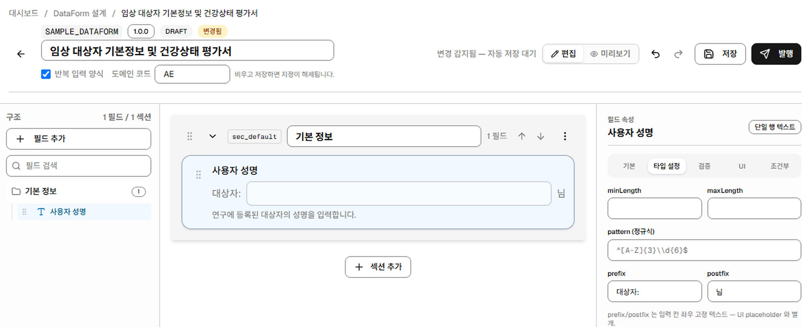
prefix — 입력란 왼쪽에 표시할 문구를 입력합니다. 예시는 대상자: 입니다.
캔버스 입력란 왼쪽에 「대상자:」 가 고정으로 표시됩니다.
postfix — 입력란 오른쪽에 표시할 문구를 입력합니다. 예시는 님 입니다.
캔버스 입력란 오른쪽에 「님」 이 고정으로 표시됩니다.
유의사항
필수 확인 데이터 손상 · 폼 완료 불가
- • prefix · postfix 는 저장되는 값이 아닙니다. 화면에만 표시되는 고정 문구이고, 데이터에는 사용자가 입력한 문자만 저장됩니다.
오해하기 쉬운 동작
- • 화면 안내와 같이 — “prefix/postfix 는 입력 칸 좌우 고정 텍스트 — UI placeholder 와 별개.” placeholder 는 값이 없을 때만 입력란 안에 흐리게 표시되었다가 입력하면 사라지지만, prefix/postfix 는 입력란 바깥에 계속 유지됩니다.
참고
- • 단위를 postfix 로 표시하면 사용자가 단위까지 함께 입력하는 오류를 줄일 수 있습니다.
- • 숫자와 단위를 다루는 항목이라면 단일 행 텍스트보다 숫자 타입이 더 적합합니다 — 숫자 타입은 단위(unit)와 범위 검증을 별도로 제공합니다.
3.5기본값 (defaultValue)
개요
새 입력을 시작할 때 미리 입력해 두는 값입니다. 대부분의 피험자가 동일한 값을 입력하는 항목에서 입력 부담을 줄입니다.
화면 설명
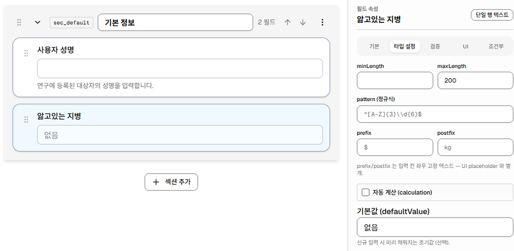
없음 — 캔버스 입력란에 미리 입력된 상태로 표시된다기본값 (defaultValue) — 신규 입력 시 미리 채워질 초기값을 입력합니다. (선택)
캔버스 입력란에 기본값이 입력된 상태로 표시됩니다.
유의사항
필수 확인 데이터 손상 · 폼 완료 불가
- • 기본값은 사용자가 확인한 값이 아닙니다. 그대로 저장되면 실제로 그 값인지 검토되지 않은 채 데이터가 축적됩니다. 임상적으로 중요한 항목에는 기본값을 지정하지 않는 편이 안전합니다.
- • 캡처의
없음처럼 특정 문구를 기본값으로 지정하면, 실제로 미측정인 항목과 구분되지 않습니다. 검사 미실시를 구분해 기록해야 한다면 미측정 선언 허용을 사용하십시오. 2.4
오해하기 쉬운 동작
- • 기본값은 새로 생성하는 입력에만 적용됩니다. 이미 저장된 데이터는 변경되지 않습니다.
참고
- • 기본값도 길이 · 정규식 제한3.2 · 3.3을 만족해야 합니다. 제한에 어긋나는 기본값은 저장 단계에서 차단됩니다.
검증 탭 — 저장 전 값 검사
- 4.1검증 규칙이 없는 상태
- 4.2규칙 추가
- 4.3규칙 작성 완료
4.1검증 규칙이 없는 상태
개요
저장하기 전에 값이 조건에 맞는지 검사하는 규칙을 모아 두는 탭입니다. 타입 설정3장의 길이 · 형식 제한보다 더 세밀한 조건을 적용할 때 사용합니다.
화면 설명
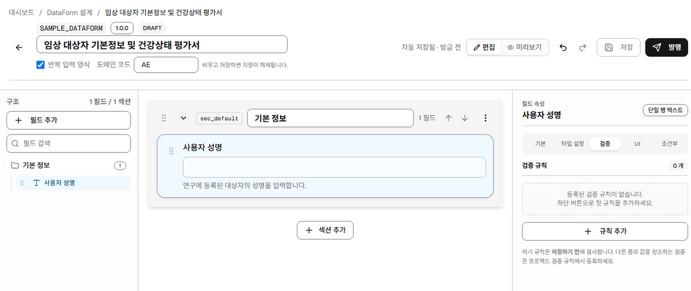
[+ 규칙 추가] — 첫 규칙을 생성합니다. 선택한 뒤의 화면은 4.2 에서 설명합니다.
검증 규칙 영역과 등록된 규칙 수입니다. 처음에는 0개 입니다.
규칙이 없으면 “등록된 검증 규칙이 없습니다. 하단 버튼으로 첫 규칙을 추가하세요.” 안내가 표시됩니다.
하단 안내 — “여기 규칙은 저장하기 전에 검사합니다. 다른 폼의 값을 참조하는 검증은 프로젝트 검증 규칙에서 등록하세요.”
유의사항
필수 확인 데이터 손상 · 폼 완료 불가
- • 다른 폼의 값을 참조하는 검증은 여기에서 생성할 수 없습니다. 그러한 규칙은 「프로젝트 검증 규칙」 화면에서 등록하십시오. 이 탭은 같은 폼 안에서 완결되는 검사만 다룹니다.
오해하기 쉬운 동작
- • 규칙은 여러 개 생성할 수 있고, 활성 상태인 규칙을 모두 만족해야 저장됩니다.
참고
- • 규칙을 생성하지 않아도 됩니다. 타입 설정의 길이 · 정규식만으로 충분한 경우가 많습니다.
4.2규칙 추가
개요
4.1 의 [+ 규칙 추가] 를 선택하면 규칙 1 블록이 생성됩니다. 규칙은 여러 개 생성할 수 있고 각각 따로 활성 · 비활성할 수 있습니다.
화면 설명
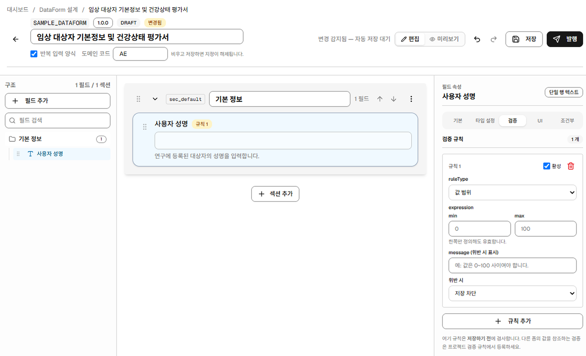
[+ 규칙 추가] — 규칙을 하나 더 생성합니다. (4.1 에서 선택한 것과 같은 버튼입니다.)
「규칙 1」 블록이 생성되고, 캔버스 표시명 옆에 「규칙 1」 배지가 표시됩니다.
규칙 수가 1개 로 변경됩니다.
활성 체크박스와 삭제 아이콘 — 체크를 해제하면 규칙을 삭제하지 않고 일시적으로 중단할 수 있습니다. 삭제 아이콘은 규칙을 영구 삭제합니다.
ruleType — 규칙의 종류입니다. 캡처는 값 범위 를 선택한 상태입니다.
min — 범위의 하한입니다.
max — 범위의 상한입니다.
흐린 글씨 0 · 100 과 “예: 값은 0~100 사이여야 합니다.” 는 입력 예시이며 설정된 값이 아닙니다. 화면 안내와 같이 “한쪽만 정의해도 유효합니다.”
message (위반 시 표시) — 규칙을 위반했을 때 사용자에게 표시할 문구입니다.
위반 시 — 저장 차단 또는 경고 중에서 선택합니다.
유의사항
필수 확인 데이터 손상 · 폼 완료 불가
- • message 를 공란으로 두면 사용자는 차단된 이유를 알 수 없습니다. 반드시 입력하십시오.
- • 단일 행 텍스트에 「값 범위」 규칙을 적용할 때는 주의하십시오. 이 타입은 값을 문자열로 저장하므로, 숫자 크기 비교가 목적이라면 숫자 타입이 더 적합합니다.
오해하기 쉬운 동작
- • [+ 규칙 추가] 를 다시 선택해 규칙 2, 3 … 을 추가할 수 있습니다. 활성 상태인 규칙을 모두 만족해야 저장됩니다.
참고
- • 저장 차단 은 값을 수정하기 전에는 저장을 차단하고, 경고 는 알리되 저장은 허용합니다. 데이터 무결성이 중요한 항목은 저장 차단을 사용하십시오.
4.3규칙 작성 완료
개요
4.2 의 빈 항목을 끝까지 입력한 상태입니다. 이 설정이면 한글이 아닌 값을 입력했을 때 저장이 차단되고 지정한 문구가 표시됩니다.
화면 설명
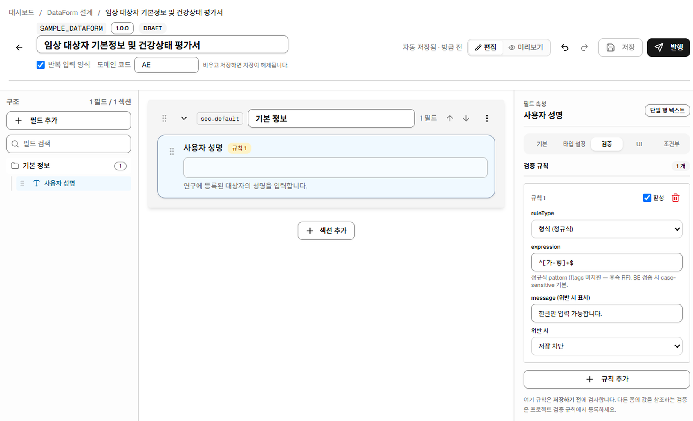
ruleType = 형식 (정규식) — 값의 형식을 검사하는 규칙입니다.
expression = ^[가-힣]+$ — “한글만, 1자 이상” 을 의미합니다.
화면 안내 — 정규식 검사는 대소문자를 구분합니다. (flags 지정은 지원하지 않습니다.)
message = 한글만 입력 가능합니다. — 어떻게 수정해야 하는지 알려 주는 문구가 적절합니다.
위반 시 = 저장 차단 — 조건을 만족할 때까지 저장되지 않습니다.
유의사항
필수 확인 데이터 손상 · 폼 완료 불가
- • 둘을 동시에 설정하면 모두 만족해야 저장됩니다. 서로 어긋나는 형식을 지정하면 어떤 값도 저장할 수 없게 되므로 한쪽만 사용하는 편이 안전합니다.
오해하기 쉬운 동작
- • 3.3 에서 pattern 으로 건 것과 같은 정규식입니다. 타입 설정의 pattern3.3 과 검증 탭의 형식(정규식) 규칙은 검사 내용이 같습니다. 차이는 위반 시 문구와 처리 방식을 직접 지정할 수 있다는 점입니다 — 사용자에게 사유를 알려야 한다면 검증 규칙을 사용하십시오.
- • 규칙을 저장한 뒤에도 활성 체크를 해제하면 즉시 적용이 중단됩니다 — 규칙을 삭제하지 않고 일시 중단할 때 사용합니다. 4.2 ②
참고
- • 타입 설정3장과 검증 규칙4장은 함께 적용됩니다. 길이 제한과 검증 규칙을 모두 만족해야 저장됩니다.
UI 탭 — 화면 배치와 안내 문구
- 5.1UI 탭 전체 구성
- 5.2레이아웃 너비
- 5.3읽기 전용 · 숨김
- 5.4placeholder · helpText
5.1전체 구성
개요
값 자체가 아니라 화면에 어떻게 배치하고 어떻게 안내할지를 정하는 탭입니다. 이 탭의 설정은 저장되는 데이터 자체를 변경하지 않습니다. 다만 숨김은 화면에서만 감추고 필수 집계에서는 제외되지 않으므로 사용 전에 5.3 을 확인하십시오.
화면 설명
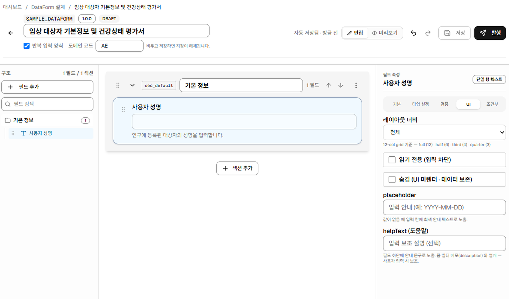
레이아웃 너비 — 한 줄에서 이 필드가 차지할 폭입니다. 선택지의 의미는 바로 아래 안내 “12-col grid 기준 — full (12) · half (6) · third (4) · quarter (3)” 에 적혀 있습니다. 5.2
읽기 전용 (입력 차단) — 표시하되 수정하지 못하게 합니다. 5.3
숨김 (UI 미렌더 · 데이터 보존) — 화면에서 감춥니다. 5.3
placeholder — 값이 없을 때 입력란 안에 표시되는 회색 안내입니다. 5.4
helpText (도움말) — 필드 아래에 표시되는 안내 문구입니다. 5.4
유의사항
오해하기 쉬운 동작
- • 입력란에 흐리게 보이는
입력 안내 (예: YYYY-MM-DD)·입력 보조 설명 (선택)은 입력 예시이며 설정된 값이 아닙니다.
참고
- • 기본값은 레이아웃 너비 = 전체, 읽기 전용 · 숨김은 해제 상태입니다.
- • 모든 항목이 선택입니다. 그대로 두어도 폼은 정상 동작합니다.
5.2레이아웃 너비
개요
한 줄을 12칸으로 나눈 12-column grid 위에서 이 필드가 차지할 폭을 선택합니다. 폭이 좁은 항목을 나란히 배치해 폼의 길이를 줄일 때 사용합니다.
화면 설명
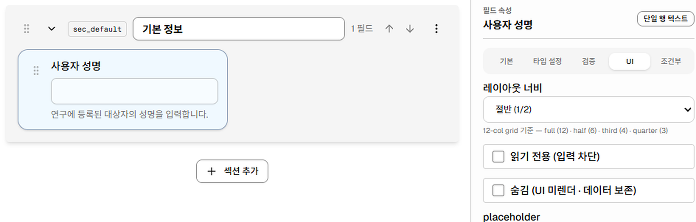
레이아웃 너비 — 선택 목록에서 폭을 지정합니다. 예시는 절반 (1/2) 입니다.
캔버스 입력란이 절반 폭으로 축소됩니다.
유의사항
필수 확인 데이터 손상 · 폼 완료 불가
- • 긴 값을 입력받는 항목을 좁게 설정하면 입력란에 한 번에 보이는 글자 수가 줄어 오탈자를 확인하기 어려워집니다. 길이 제한3.2과 함께 고려하십시오.
오해하기 쉬운 동작
- • 폭을 줄이면 다음 필드가 같은 줄에 배치됩니다. 한 줄의 합이 12를 초과하면 다음 줄로 넘어갑니다.
참고
- • 화면 폭이 좁은 기기에서는 설정과 무관하게 한 줄에 하나씩 세로로 배치될 수 있습니다.
너비 선택지
| 선택 | 차지하는 칸 | 한 줄에 배치되는 개수 |
|---|---|---|
| 전체 | 12 | 1개 |
| 절반 (1/2) | 6 | 2개 |
| 삼분 (1/3) | 4 | 3개 |
| 사분 (1/4) | 3 | 4개 |
5.3읽기 전용 · 숨김
개요
필드를 수정하지 못하게 하거나 표시되지 않게 합니다. 둘 다 저장된 데이터는 그대로 보존됩니다.
화면 설명
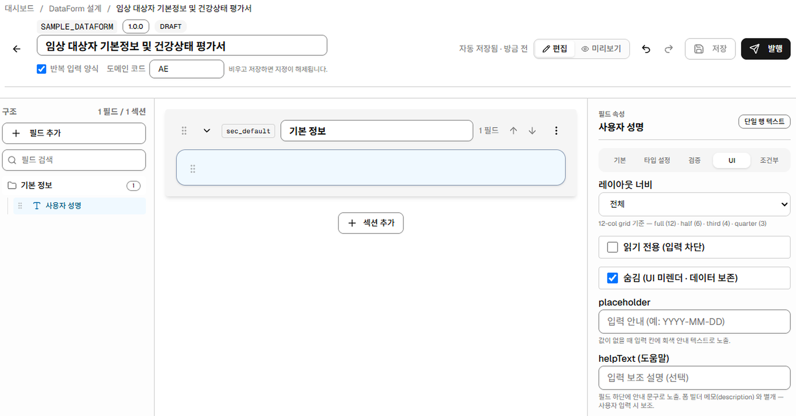
읽기 전용 (입력 차단) — 값은 표시되지만 사용자가 수정할 수 없습니다. (이 캡처에서는 해제 상태)
숨김 (UI 미렌더 · 데이터 보존) — 입력 화면에 표시하지 않습니다. 이미 저장된 값은 삭제되지 않습니다.
캔버스에서 필드가 사라져 섹션이 비어 보입니다.
숨겨도 구조 패널에는 그대로 남아 있습니다 — 다시 선택해 설정을 되돌릴 수 있습니다.
폼 자체는 정상이며 상단에 자동 저장됨 이 표시됩니다.
유의사항
필수 확인 데이터 손상 · 폼 완료 불가
- • ⛔ 필수 항목을 숨기지 마십시오. UI 탭의 숨김은 화면에서만 감추고 필수 집계에서는 제외되지 않습니다 — 사용자가 입력할 수 없는 항목이 분모에 남아 폼을 완료할 수 없게 됩니다.
- • 숨김은 데이터를 삭제하지 않습니다. 화면에서만 사라지므로, 값을 삭제하려면 필드를 삭제해야 합니다.
오해하기 쉬운 동작
- • 조건부 탭의 숨김과 다릅니다. 조건이 맞지 않아 숨겨진 필드는 필수 집계에서 제외됩니다6장. 같은 “숨김” 이라는 표현을 사용하지만 검증에서의 처리가 정반대이므로 구분하십시오.
- • 읽기 전용과 숨김은 다릅니다. 읽기 전용은 “표시하되 수정 불가”, 숨김은 “표시하지 않음” 입니다. 값을 보여 주어야 한다면 읽기 전용을 사용하십시오.
5.4placeholder · helpText
개요
사용자에게 무엇을 어떻게 입력해야 하는지 알려 주는 두 가지 문구입니다. 표시되는 위치와 사라지는 시점이 다릅니다.
화면 설명
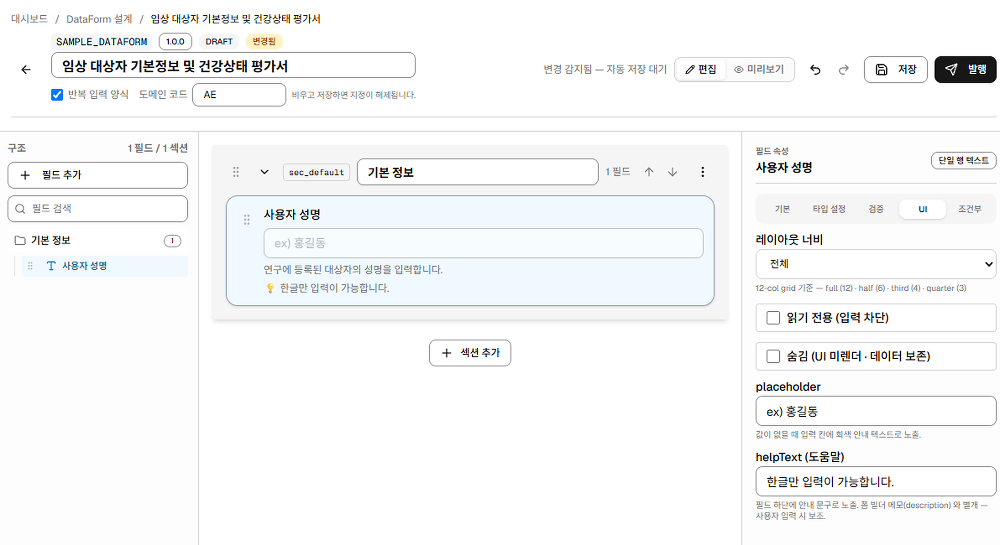
placeholder — 입력란 안에 표시할 안내 문구를 입력합니다. 예시는 ex) 홍길동 입니다.
입력란 안에 회색으로 표시됩니다. 사용자가 입력을 시작하면 사라집니다.
helpText (도움말) — 필드 아래에 표시할 안내 문구를 입력합니다.
필드 아래에 전구 아이콘(💡)과 함께 표시됩니다. 입력해도 사라지지 않습니다.
유의사항
필수 확인 데이터 손상 · 폼 완료 불가
- • description 과 helpText 는 서로 다른 항목입니다. 화면 안내와 같이 — helpText 는 “폼 빌더 메모(description)와 별개 — 사용자 입력 시 보조” 입니다. 둘 다 입력하면 두 줄이 함께 표시됩니다. 캡처의 캔버스에서도 도움말과 💡 문구가 각각 한 줄씩 표시되어 있습니다.
- • 형식 제한(3.3 정규식)을 설정했다면 그 형식을 placeholder 나 helpText 로 안내하십시오. 안내하지 않으면 사용자는 저장 단계에서야 차단되고 사유를 알 수 없습니다.
오해하기 쉬운 동작
- • placeholder 는 입력을 시작하면 사라지므로, 입력 중에도 확인해야 하는 안내는 helpText 에 입력하십시오.
세 문구의 차이
| 항목 | 표시 위치 | 입력을 시작하면 | 설정 위치 |
|---|---|---|---|
| placeholder | 입력란 안 (회색) | 사라짐 | UI 탭 |
| helpText | 필드 아래 (💡) | 그대로 유지 | UI 탭 |
| description | 표시명 아래 | 그대로 유지 | 기본 탭 2.1 |
조건부 탭 — 다른 값에 따라 표시하기
- 6.1조건부 표시 활성
- 6.2조건 설정
6.1조건부 표시 활성
개요
다른 필드의 값에 따라 이 필드를 표시하거나 감추는 기능입니다. 「임신 여부 = 예」일 때만 임신 주수를 입력받는 방식의 분기에 사용합니다.
화면 설명
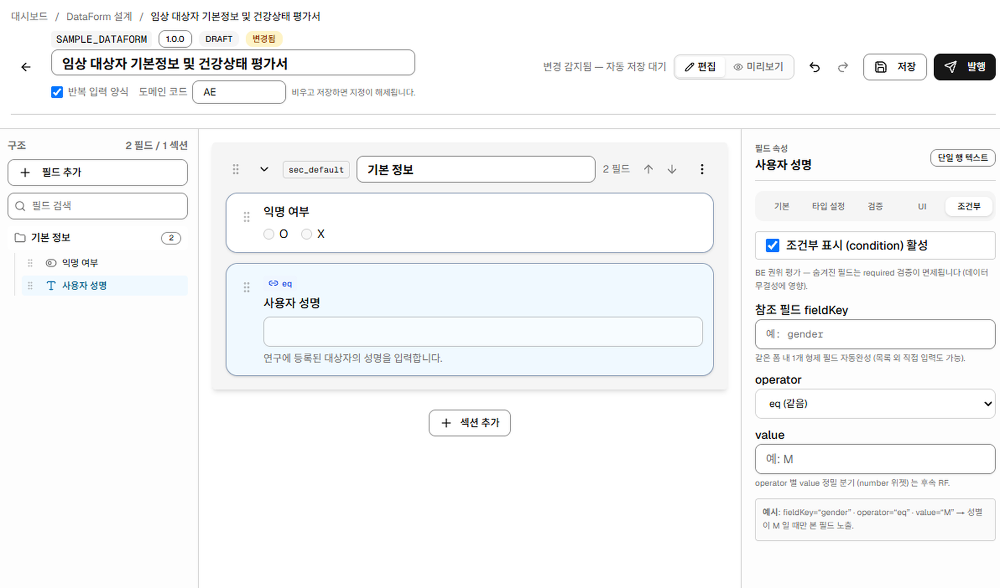
조건부 표시 (condition) 활성 — 선택하면 아래 조건 설정이 표시됩니다.
캔버스 필드 위에 🔗 eq 배지가 표시되어 조건이 적용되었음을 알립니다.
⚠ 화면 안내 — “숨겨진 필드는 required 검증이 면제됩니다 (데이터 무결성에 영향).” 조건 판정은 시스템이 수행합니다.
참조 필드 fieldKey — 조건의 기준이 되는 같은 폼 안의 다른 필드입니다. 같은 폼의 형제 필드가 자동완성되며, 목록에 없는 값은 직접 입력할 수도 있습니다.
operator — 비교 방법입니다. 기본값은 eq (같음) 입니다.
value — 비교할 값입니다.
하단 예시 — fieldKey="gender" · operator="eq" · value="M" → 성별이 M 일 때만 본 필드 노출.
유의사항
필수 확인 데이터 손상 · 폼 완료 불가
- • 조건을 설정하면 필수 검증이 면제될 수 있습니다. 조건이 맞지 않아 숨겨진 동안에는 그 필드가 필수여도 비어 있는 상태로 폼이 완료됩니다. 이는 결함이 아니라 의도된 동작입니다 — 표시되지 않는 항목을 필수로 요구하면 폼을 완료할 수 없기 때문입니다.
오해하기 쉬운 동작
- • 조건 판정은 시스템이 수행합니다. 화면에서 감추는 데 그치지 않고 검증 결과도 함께 달라집니다.
참고
- • 조건을 활성화하고 참조 필드를 공란으로 두면 조건이 성립하지 않습니다. 반드시 ②~④를 모두 입력하십시오. 6.2
6.2조건 설정
개요
6.1 에서 활성화한 조건을 끝까지 입력한 상태입니다. 이 설정이면 「익명 여부」 필드의 값이 O 일 때만 이 필드가 입력 화면에 표시됩니다.
화면 설명
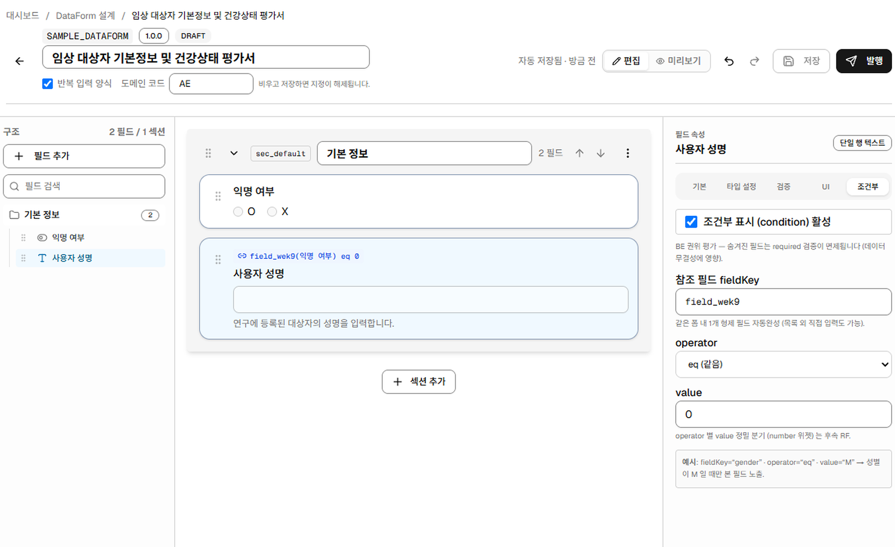
익명 여부 가 O 일 때만 표시되도록 설정한 상태참조 필드 fieldKey = field_wek9 — 같은 폼의 「익명 여부」 필드를 가리킵니다.
operator = eq (같음)
value = O
①~③을 모두 입력한 결과 — 캔버스 배지가 🔗 field_wek9(익명 여부) eq O 로 구체화됩니다. 어떤 조건인지 바로 확인할 수 있습니다.
참조 대상인 「익명 여부」 필드가 같은 폼 안에 있어야 하며, 구조 트리에서 확인할 수 있습니다.
하단 예시 — fieldKey="gender" · operator="eq" · value="M" → 성별이 M 일 때만 본 필드 노출.
유의사항
필수 확인 데이터 손상 · 폼 완료 불가
- • 참조 필드는 같은 폼 안에 있어야 합니다. 다른 폼의 값은 참조할 수 없습니다.
- • 참조 필드의 fieldKey 를 변경하거나 삭제하면 조건이 깨집니다. 조건은 표시명이 아니라 fieldKey 로 연결됩니다. (2.1 의 fieldKey 주의사항과 같은 이유입니다.)
오해하기 쉬운 동작
- • value 는 참조 필드에 저장되는 값과 같은 형태로 입력해야 합니다. 캡처처럼 선택 필드를 참조하면 화면에 보이는 문구가 아니라 그 선택지의 저장값(
O)을 입력합니다.
참고
- • 조건을 사용하면 폼이 짧아지고 불필요한 입력이 줄어듭니다. 다만 조건이 서로 충돌하면 끝까지 표시되지 않는 필드가 생기므로, 설정 후 미리보기로 반드시 확인하십시오.
부록
- 7.1설정 항목 한눈에 보기
7.1단일 행 텍스트 설정 항목 한눈에 보기
탭별 설정 항목
| 탭 | 항목 | 무엇을 정하는가 | 본문 |
|---|---|---|---|
| 기본 | fieldKey | 값이 저장되는 실제 키 (저장 후 변경 금지) | 2.1 |
| label (표시명) | 화면에 표시되는 항목 이름 | 2.1 | |
| description (도움말) | 표시명 아래 보조 설명 | 2.1 | |
| 필수 입력 | 반드시 입력해야 하는지 | 2.2 | |
| SDV 검증 대상 | CRA 원자료 대조 대상인지 · 검증 필수 여부 | 2.3 | |
| AE 의미 역할 | 이상사례 양식에서 이 필드가 의미하는 바 | ※ | |
| 미측정 선언 허용 | “측정하지 못함” 을 값으로 남길 수 있는지 · 표기 라벨 · 지시등 | 2.4 | |
| 타입 설정 | minLength · maxLength | 문자 수 하한 · 상한 (한쪽만 지정 가능) | 3.2 |
| pattern (정규식) | 값이 따라야 할 형식 | 3.3 | |
| prefix · postfix | 입력란 좌우 고정 문구 (저장되지 않음) | 3.4 | |
| 기본값 (defaultValue) | 신규 입력 시 미리 입력해 둘 값 | 3.5 | |
| 검증 | ruleType | 규칙 종류 (값 범위 · 형식(정규식) 등) | 4.2 · 4.3 |
| expression | 규칙의 조건 (값 범위는 min · max — 한쪽만 지정 가능) | 4.2 | |
| message | 위반 시 사용자에게 표시할 문구 | 4.2 | |
| 위반 시 · 활성 | 저장 차단 / 경고 · 규칙 활성 · 비활성 | 4.2 | |
| UI | 레이아웃 너비 | 12-col grid 상의 폭 (전체 · 1/2 · 1/3 · 1/4) | 5.2 |
| 읽기 전용 | 표시하되 수정하지 못하게 | 5.3 | |
| 숨김 | 화면 미표시 (저장값 보존 · 필수 집계에는 유지) | 5.3 | |
| placeholder · helpText | 입력 안내 문구 (입력란 안 / 필드 아래) | 5.4 | |
| 조건부 | 조건 활성 | 조건부 표시 사용 여부 (필수 검증 면제) | 6.1 |
| 참조 필드 fieldKey | 조건의 기준이 되는 같은 폼의 필드 | 6.2 | |
| operator · value | 비교 방법과 비교할 값 | 6.2 |
반드시 기억할 것
필수 확인 데이터 손상 · 폼 완료 불가
- • 저장한 뒤 fieldKey 를 변경하면 기존 데이터와의 연결이 끊어집니다. 2.1
- • 조건부 표시로 숨겨진 필드만 필수 집계에서 제외됩니다. UI 탭의 숨김은 제외되지 않아 필수 항목을 숨기면 폼을 완료할 수 없습니다. 5.3 · 6.1
- • 운영 중인 폼에서 길이 · 형식 제한을 좁히면 기존 값이 다시 저장될 때 차단될 수 있습니다. 3.2 · 3.3
오해하기 쉬운 동작
- • 값을 수정하면 SDV 검증이 해제되어 품질 상태가 PENDING 으로 되돌아갑니다. 2.3
- • 타입 설정의 pattern 과 검증 탭의 형식(정규식) 규칙은 함께 적용됩니다 — 서로 어긋나면 어떤 값도 저장할 수 없습니다. 3.3 · 4.3
참고
- • 숫자 크기 비교 · 통계가 목적이라면 단일 행 텍스트가 아니라 숫자 타입을 사용하십시오.
이 문서에서 다루지 않은 것
※ AE 의미 역할 — 기본 탭에 있으나 설정 과정 캡처가 없어 별도 절을 두지 않았습니다. 이상사례(AE) 양식을 사용하는 프로젝트에서만 지정하며, 자세한 사용법은 AE 관련 문서를 참조하십시오.
자동 계산 (calculation) — 타입 설정 탭에 항목이 표시되지만 단일 행 텍스트에서는 사용하지 않습니다. 다른 필드 값으로 값을 산출하는 기능이므로 숫자 타입에서 사용하십시오.